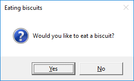
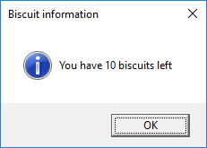
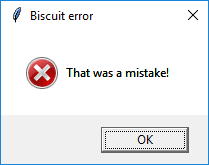

Alerts
Using alerts
To use the alerts you will need to import each one individually at the start of your program. For example:
from guizero import warn, info
Purpose
These functions pop up a box on the screen that displays a message. The functions available are:
warn(title, text)- popup box with a warning iconinfo(title, text)- popup box with an information iconerror(title, text)- popup box with an error iconyesno(title, text)- popup box with yes and no options. PressingYesreturnsTrueand pressingNoreturnsFalse.
All pop up boxes use the native display, so they will look different depending on your operating system.
Examples
Warning box
This will pop up a warning box with the title "Uh oh!" and the message "You are almost out of biscuits!".
from guizero import App, warn
app = App(title="Biscuit monitor")
warn("Uh oh!", "You are almost out of biscuits!")
app.display()
On Windows, the box looks like this:

The info and error boxes work in exactly the same way but will display different icons.
Yes/No box
When this function is called it returns a boolean value.
- If
Yeswas pressed, returnTrue - If
Nowas pressed, returnFalse
You can store this value in a variable and test it:
from guizero import App, yesno, info, error
app = App(title="Snowman")
build_a_snowman = yesno("A question...", "Do you want to build a snowman?")
if build_a_snowman == True:
info("Snowman", "It doesn't have to be a snowman")
else:
error("Snowman", "Okay bye...")
app.display()
This code will first display the yes/no box

If Yes is pressed, an information box will be displayed:

If No is pressed, an error box will be displayed

Example: Using an alert as a callback
You can also use these functions in a callback (when you have to provide a function for another widget to call). Here is an example with a PushButton which pops up an info box when it is pressed.
from guizero import App, PushButton, info
app = App()
button = PushButton(app, command=info, args=["Info", "You pressed the button"])
app.display()
The arguments provided to the PushButton are:
- Where the button should be created (within the
app) - The name of the function to call when pressed (
info) - A list of the arguments to the function you are calling (values for the
titleandmessagearguments for theinfofunction)
Example: Do you really want to close?
You can use a yesno box to check whether someone really wants to exit your app. If they click yes, the app is closed, if not, nothing happens and they can continue with what they were doing.
from guizero import App, Text, yesno
# Ask the user if they really want to close the window
def do_this_on_close():
if yesno("Close", "Do you want to quit?"):
app.destroy()
app = App()
title = Text(app, text="blank app")
# When the user tries to close the window, run the function do_this_on_close()
app.on_close(do_this_on_close)
app.display()